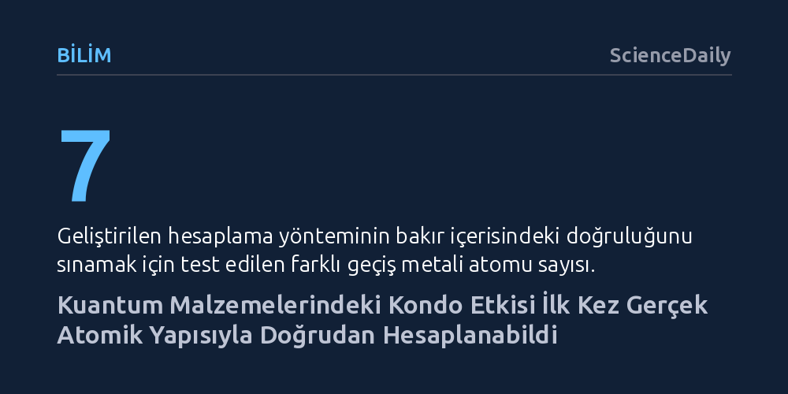

BILIM · ScienceDaily · 2026-10-11
Caltech ve Yale araştırmacıları, manyetik atom içeren metallerdeki direnç artışını açıklayan Kondo etkisini basitleştirilmiş modellere sığınmadan, gerçek atomik yapı üzerinden ilk kez yüksek doğrulukla hesaplamayı başardı. Kuantum kimyasından uyarlanan bu yöntem, yüksek sıcaklık süperiletkenlerinin bilgisayarda tasarlanabilmesini mümkün kılıyor.
Kuantum malzemelerinin karmaşık davranışlarını anlamak için artık sadece maliyetli laboratuvar deneylerine bağımlı olmadığımızı, temel kuantum denklemleriyle doğrudan bilgisayarda malzeme tasarlanabileceğini gösteriyor.

Klasik katı hâl fiziği kurallarına göre, bir metal soğutuldukça atomik titreşimler yavaşlar ve iletkenlik elektronlarının akışı kolaylaşarak elektriksel direnç düzenli biçimde düşer. Ancak bakır gibi sıradan bir iletkenin içine demir veya manganez gibi tekil manyetik atomlar safsızlık olarak girdiğinde bu düzen bozulur. Sıcaklık düştükçe azalan direnç, belirli bir kritik eşiğe ulaştığında aniden düşüşü keser, dip yapar ve metal soğumaya devam ettikçe yeniden yükselmeye başlar.
Fizikte Kondo etkisi olarak bilinen bu fenomen, iletkenlik elektronları ile manyetik safsızlık arasındaki kuantum etkileşiminin doğrudan bir sonucudur. Yüksek sıcaklıklarda safsızlık atomunun eşleşmemiş elektronu serbestçe yön değiştirirken, sıcaklık Kondo eşiğinin altına indiğinde çevreden geçen elektronlar bu spinle güçlü biçimde etkileşime girer. Elektronlar kendi spinlerini tersine çevirerek atomun manyetizmasını perdeleyen kolektif bir kuantum bulutu oluşturur; bu ilave saçılma ise elektrik akımına karşı direncin yeniden tırmanmasına yol açar.
Kondo etkisinin genel kuramsal çerçevesi 1970'li yıllarda ortaya konmuş ve çok sayıda parçacığın birbirini etkilediği klasik bir "çok cisim problemi" olarak fizik tarihine geçmiştir. Silikon gibi yaygın elektronik malzemelerde elektronlar arası etkileşimler zayıf olduğu için tek tek ele alınabilir; ancak güçlü korelasyonlu kuantum malzemelerinde her bir elektronun davranışı çevresindeki komşularının anlık durumuna sıkı sıkıya bağlıdır.
Bu devasa matematiksel karmaşıklık yüzünden araştırmacılar onlarca yıl boyunca gerçek atomik yapıları birkaç yörüngeye indirgeyen basitleştirilmiş modellerle çalışmak zorunda kaldı. Fakat bu yaklaşımlar, belirli bir malzemenin direnç eğrisinin hangi kesin sıcaklıkta tersine döneceğini ya da gerçek bir alaşımda elektron etkileşimlerinin nasıl şekilleneceğini nicel ve hatasız biçimde öngörmekte yetersiz kalıyordu.
Caltech ve Yale Üniversitesi araştırmacıları, geleneksel fizik yaklaşımlarının tıkandığı noktada rotayı kuantum kimyasına çevirdi. Ekip, moleküler yapıları yüksek hassasiyetle modellemek için geliştirilen gelişmiş hesaplama araçlarını katı hâl fiziğindeki kuantum malzemelerine uyarladı. Bu yöntem sayesinde manyetik safsızlık atomları adeta metal kafesin içine gömülü bağımsız moleküller gibi ele alındı ve tüm elektron etkileşimleri basitleştirilmeden korundu.
Yeni hesaplama yöntemi, bakır içerisine yerleştirilen yedi farklı geçiş metali atomu üzerinde test edildi. Elde edilen hesaplama sonuçlarının, geleneksel modellere kıyasla iki büyüklük mertebesine kadar (yaklaşık yüz kat) daha yüksek doğruluk sunduğu kanıtlandı. Çalışmanın kıdemli yazarı Garnet Chan'in belirttiği gibi, "Karmaşık bazı malzemelerin özelliklerini deneylere başvurmadan, tamamen hesaplama yoluyla öngörmek artık mümkün."
Kondo etkisinin gerçek malzemelerde çözülmesi, yalnızca yarım asırlık bir fizik bilmecesini aydınlatmakla kalmıyor; yüksek sıcaklık süperiletkenleri ve kuantum mıknatısları gibi teknolojik açıdan devrim yaratabilecek malzemelerin simülasyonuna zemin hazırlıyor. Her iki sistemde de elektronların birbiriyle kurduğu karmaşık korelasyonlar malzemenin işlevini belirleyen temel faktördür.
İlk ilkelerden yola çıkan bu teorik kabiliyet, yeni kuantum malzemeleri arayışında laboratuvardaki pahalı ve zaman alıcı deneme-yanılma süreçlerini kökten değiştirebilir. Muazzam kimyasal çeşitlilik içinde hangi bileşimlerin üstün kuantum özellikleri sergileyeceğini önceden hesaplayabilmek, yeni nesil kuantum teknolojilerinin geliştirilmesini büyük ölçüde hızlandıracaktır.